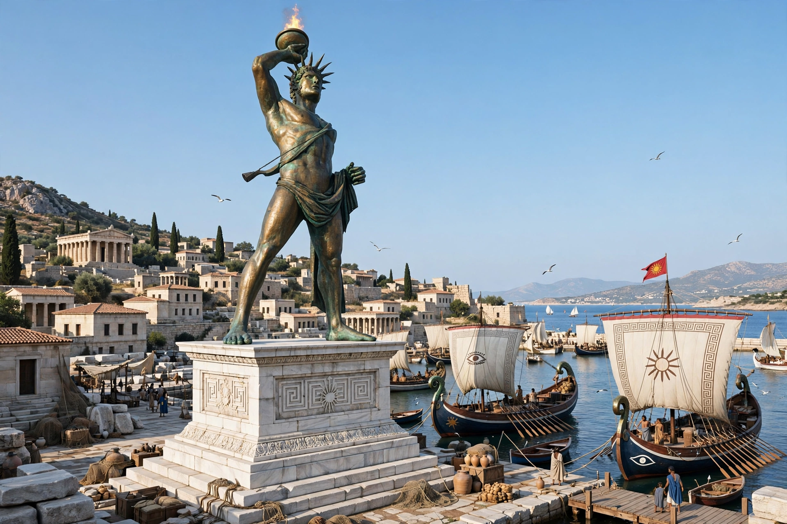

| Chares of Lindos | |
|---|---|
| Born | Lindos, Rhodes |
| Active | Early 3rd century BC |
| Occupation | Sculptor |
| Teacher | Lysippos |
| Known for | Colossus of Rhodes |

Chares of Lindos (Greek: Χάρης ὁ Λίνδιος) was a Greek sculptor of the early Hellenistic period, a native of Lindos on the island of Rhodes and a pupil of the great sculptor Lysippos. He is famous as the creator of the Colossus of Rhodes, the gigantic bronze statue of the sun god Helios that was counted among the Seven Wonders of the Ancient World.
After Rhodes survived the siege of Demetrius Poliorcetes in 305–304 BC, the Rhodians sold off the abandoned siege equipment to finance a monument of thanksgiving to Helios, the island's patron god. Chares was commissioned to build the statue. According to ancient accounts, construction took twelve years (c. 292–280 BC). The bronze figure stood about 33 metres (108 ft) high — roughly the height of the modern Statue of Liberty from feet to crown — on a white marble pedestal near the harbour. Its iron and stone internal framework was clad in cast bronze plates; later romantic depictions of the statue straddling the harbour entrance are not supported by the evidence.
The Colossus stood for only about 56 years before an earthquake in 226 BC snapped it at the knees. Following an oracle's advice, the Rhodians left the fallen giant where it lay, and its ruins remained a tourist attraction for more than 800 years: Pliny the Elder wrote that few people could wrap their arms around one of its fallen thumbs. The bronze was finally carried off as scrap after the Arab conquest of Rhodes in the 7th century AD. A later literary anecdote claimed that Chares took his own life when he realised he had miscalculated the cost of the project — a story most scholars regard as legend.
Pliny also credits Chares with a colossal head that was dedicated on the Capitoline Hill in Rome by the consul Lentulus. Little else of his oeuvre survives, and his fame rests entirely on the Colossus, the largest statue of the ancient world.